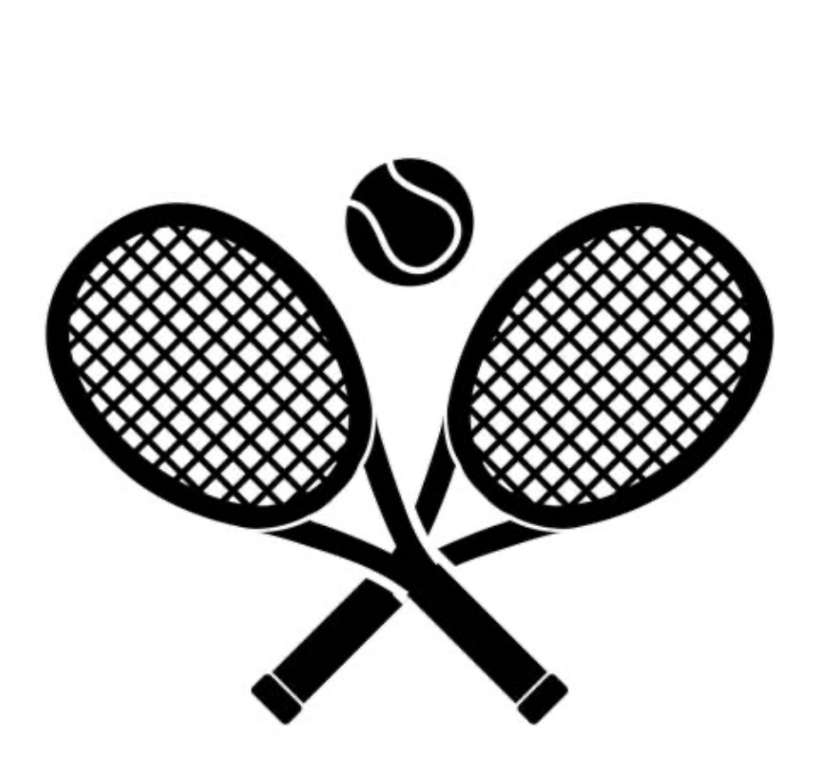

Extracurriculars

I am a member of DECA, a business and marketing club that prepares students for careers in marketing, finance, hospitality, and management. In DECA, I have had the opportunity to participate in the Business Law and Ethics Team Decision Making event and the Business Finance Series individuals event. As a national level qualifier, some of the competitions I have participated in include the DECA State Competition (SCDC) and the DECA International Career Development Conference (ICDC). I also took part in the Quizbowl competition at SCDC in 2024. Through these competitions, I have learned how to analyze business scenarios, develop marketing strategies, and present my ideas effectively. I also hold a leadership position in my school's chapter, where I help organize events and mentor over 150 members.
I am also a president of Food4Good. This is a community service club in which members make homemade food that we donate to local shelters. As president, I am responsible for planning meetings, coordinating with shelters, and organizing food drop-offs.
Instagram: @hhsfood4good

Additionally, I am a member of the National Honor Society (NHS), which recognizes students who excel in academics, leadership, service, and character. As a member of NHS, I participate in community service events that have helped me develop my leadership skills and give back to my community. For example, I am involved in the trick-or-treat for canned goods event, where we collect canned food donations for the Holliston Food Pantry during Halloween. I am also currently doing a leadership project where I will collect books, sell them for low prices, and donate the money to the Malala Fund, a non-profit organization focused on literacy and education for women.
